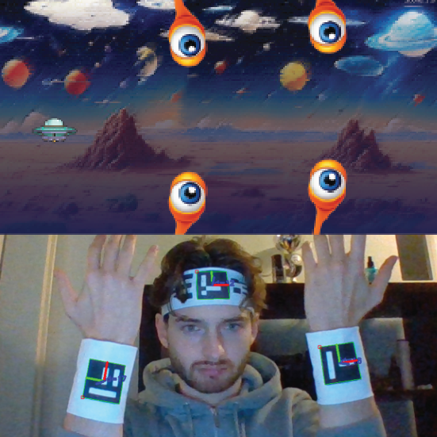
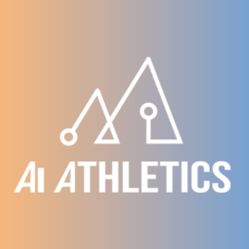
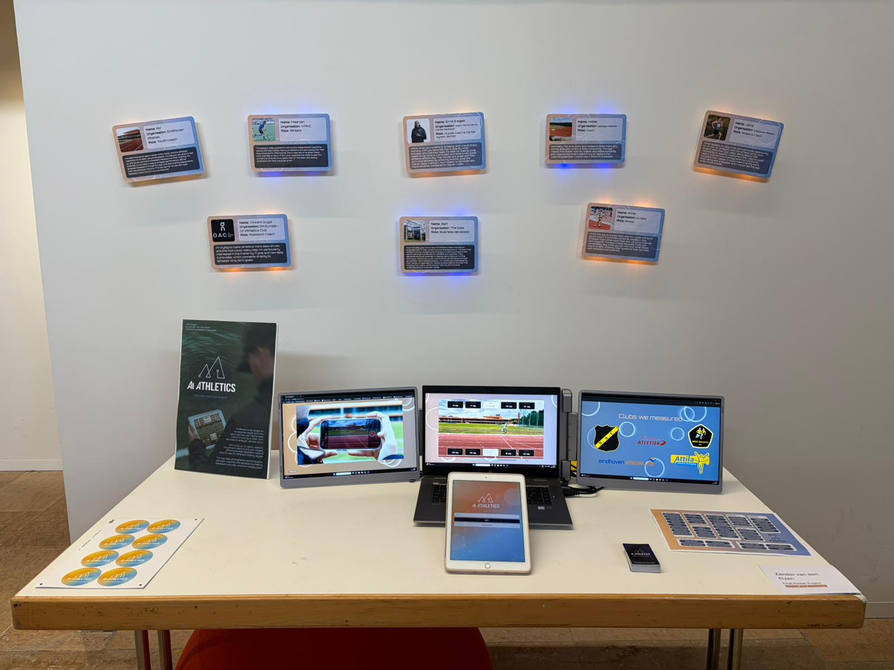
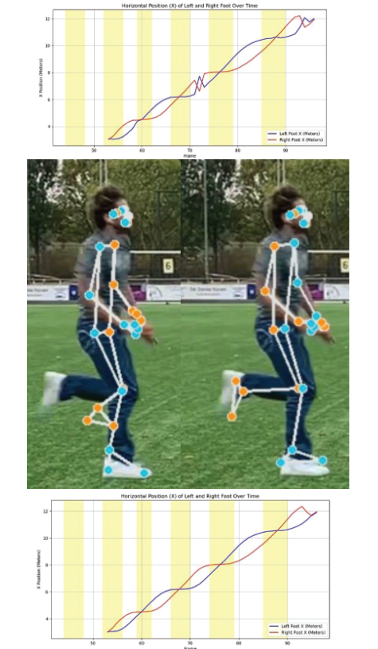

Expertise Areas
The overall development of all expertise areas is described below. In my experience in the design projects I did, I developed more awareness of how all these areas are connected in design. Where user and society of course entail the societal impact and awareness, I value the inclusion of users in design highly in search for validation or insights. With creativity being a core competence for exploration, the aesthetics help to communicate concepts, make attractive designs, and show how components belong to the same business through cohesion. Business and Entrepreneurship is thus formed by aesthetics and users but also rely on the realization of products and data to inform design decisions. MD&C can here thus play a role and be collected from users but is also an interesting input for visual design.
Technology & Realization
Developing my expertise in Technology & Realization has been a key focus of my master’s trajectory, complementing my design skills and broadening my approach to problem-solving. I aim to not only envision concepts but also bring them to life through concrete, functional solutions. I have learned to build mobile applications, combining both backend and frontend development using code languages such as Python, JavaScript, and TypeScript. In these developments I can also collaborate with engineers, creating systemic overviews or interface mockups to discuss the implementation of features.
In my designs, I strive to integrate emerging technologies that expand the interaction and evaluation potential of products. For example, I developed a mobile application that applies markerless motion capture to analyze sprint form in athletes. This biomechanical data was used to create an accessible experience for athletes and coaches. This project also used object tracking to let the system automatically calibrate real-world distances through cones.I have learned to navigate the intersection of design, technology, and user experience. I also trained machine learning models myself, including a project involving AI-powered drumsticks that recognize and classify sounds which required data collection, annotation, model training, and system integration.
For physical prototypes I created wearables for object tracking with markers to play games. To create physical prototypes, I developed skills in 3D modeling and 3D printing using Solidworks. I have also worked with laser cutting, sensors and Arduino for interactive physical prototypes.

Business & Entrepreneurship
Developing my expertise in Business & Entrepreneurship has been a central part of my growth, particularly through working on my own startup, AI Athletics, which also served as my graduation project. In this context, I explored not only the functional and design aspects of the product but also its potential in the market and how it could fit into users’ routines. Engaging potential customers directly in the development process allowed me to gather real-world insights and validate assumptions continuously. To guide strategic decisions, I collaborated with business experts who helped me understand market positioning, prioritize next steps, and identify opportunities for growth.
I focus on shorter validation cycles through prototyping, testing, and learn about which features and approaches are truly valuable. On the business side, I developed skills in creating business models, conducting competitor analyses, and exploring market potential. In search for early-stage funding, I went through applcication processes for grants and competing in innovative startup competitions like the TU/e Contest and EuroTeQaThon. To test real willingness to pay, I implemented the concierge method, offering services manually to validate user interest and refine the value proposition before scaling.
Besides the design choices and the business strategy, I also explored marketing and communication methods, experimenting with different platforms, formats, and messaging strategies to determine how to effectively reach and engage target audiences. I approach entrepreneurship as an integrated part of the design process, ensuring that solutions are both meaningful for users and sustainable in the market. This expertise area has strengthened my ability to transform innovative concepts into practical, scalable, and impactful companies.

User & Society
I place great value on the role of users in design, as they possess the practical experience and knowledge that provide answers to key design decisions. To leverage this, I have learned to plan, conduct, and analyze user tests in different contexts, gathering insights that directly inform design choices. Alongside end-users, I highly value the input of industry experts, whose experience often goes beyond what research can reveal. Their perspectives not only guide functional decisions but also shape the overall user experience.
To better understand interaction patterns, I use tools such as user journey maps to compare assumptions with actual behavior, aiming to design solutions that seamlessly integrate into existing routines. In digital products, I apply principles like “overview first, zoom and filter, details on demand” to maintain clarity and structure, ensuring designs become intuitive.
I also consider the broader societal context in the design cases. Through projects addressing topics such as party drug consumption, the quantified self, and the transition of students to a new city, I explored ethical considerations, social trends, and opportunities for meaningful impact. Understanding these contexts allows me to create designs that are not only useful and usable but also socially responsible and relevant.

Creativity & Aesthetics
Exploration and creativity are at the core of my design practice. I often create sketches and visualizations, using my skills to generate multiple concepts without constraints. This exploratory phase allows me to explore concepts and communicate them easily. In a further stage, I translate concepts into functional prototypes, where creativity remains essential not to overinvest in fully finished products, but to communicate design effectively and gather meaningful feedback.
Aesthetics are a key consideration in the design, influencing how colors, shapes, forms and interactions create the design identity. My visual style often leans towards smooth and futuristic designs, characterized by gradients, soft edges, motion, and bold colors. Consistency across interfaces, branding elements, and subtle details creates cohesion and supports recognition of a product or brand. I see the experience when demonstrating a design is another important aesthetic component. By considering the interaction and presentation, a design can also create an experience that allows room to feel the effect of a design.
I frequently connect data and visual design elements, creating responsive or personalized experiences that are both informative and engaging. An example is in the project on Genneper park, where I designed a prototypes with leds and reflecting materials to communicate information about the visitors of the park. To realize these ideas, I use the Adobe Creative Cloud extensively. Illustrator and Photoshop are my primary tools for visual design, while InDesign supports reports and structured documents. For motion and interactive content, I use Premiere Pro and After Effects to create animations, videos, and visual storytelling elements.

Math, Data & Computing
I see data as a fundamental component in design, acting as both a qualitative and quantitative source of insight for decision-making. Within AI Athletics, I collect and process movement data using pose estimation techniques to analyze sprint performance. While this data initially consists of 2D pixel coordinates, it is calibrated and transformed into real-world measurements, enabling meaningful interpretation in a sports context. To derive actionable output for athletes and coaches, I compute biomechanical features such as joint angles and movement patterns that translate raw data into performance indicators.
Given the limitations of using accessible hardware, I critically evaluated data quality and apply filtering and fine-tuning methods to improve reliability. This includes removing outliers, correcting values, and validating consistency across frames. Beyond data processing, I make decisions about data storage and system architecture, determining which information is relevant to retain and how it can be structured efficiently within the overall system.
Equally important is how data is communicated. I focus on designing clear and intuitive data visualizations that avoid cognitive overload and support interpretation. This includes selecting appropriate visual representations, maintaining clear labeling, and using structured color coding to communicate information effectively. Beyond informing decisions, I use data as a creative input, allowing it to drive visual and interactive elements such as color, form, motion, and behavior within a design.
